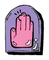
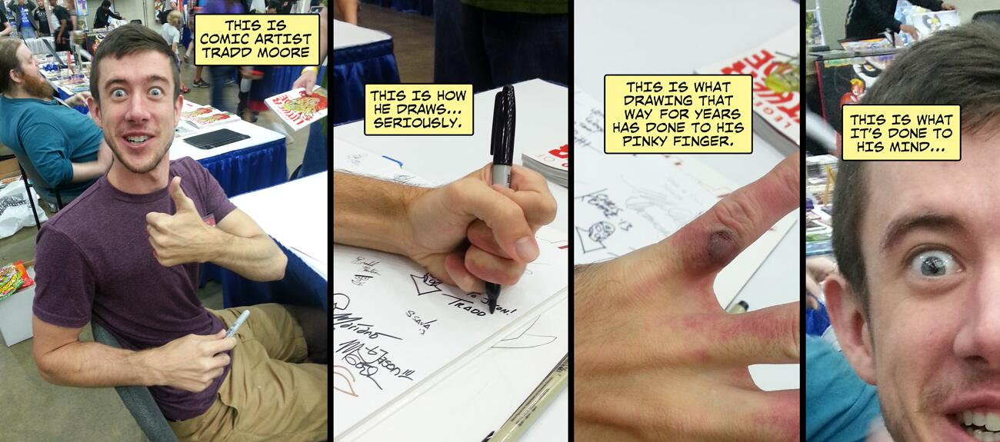

This symbol, shown to your left, is the universal icon of the visual artist. Illustrating the most important
of extremities, the hand displays an exaggerated, emphasized protrusion near the top of the middle finger.
The presence of this temporary physical deformation—what is formally called a 'callus'—is a product of the
intense labor and persistence involved in the act of fine motor control measurement. The semiotic
universality claimed in this drawing almost acts as an implicit rite of passage; the testing of physical
limits proves your mettle in how much you will sacrifice for one of the most difficult, complex, and
dazzlingly impressive things that we as human beings can achieve.
I've never gotten a callous from drawing. Holy shit, can you imagine that? I understand playing guitar can
produce some calluses (You're essentially rubbing your fingers on sandpaper-esque hard metal strings for hours
at a time), how do you grip a smooth object so hard for such a long time that something like that happens? It
just seems like bad posture. Like those people who hold pens with ALL their fingers. I just looked it up; Tradd
Moore holds his tools with four fingers. His pinky is constantly creating friction with the paper. There's an
old photo of him and his grip... the spaces in between his fingers have welts, it looks like he has a scab
forming on one of them. Take a gander:

I mean, who leaves this totally unattended in a child?